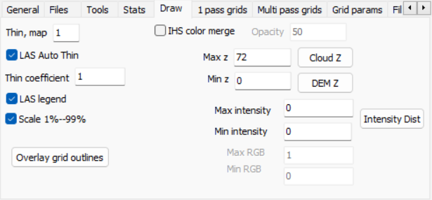
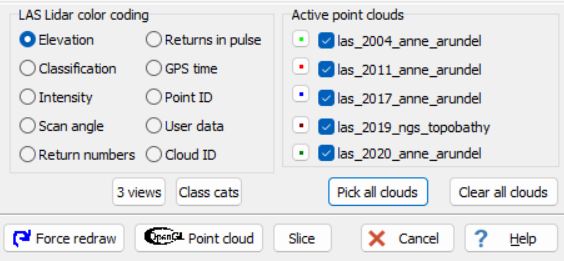

LIDAR Point cloud form option,
Draw tab
LIDAR Point cloud form option,
Draw tab
|
  |
Thin, map: faster if you skip points LAS auto thin: the program can attempt smart thinning that will speed up drawing and not create holes. Thin coeffiecient: with auto thinninng, the value will be PointDensity * ScreenPixelSize * ThinCoefficient LAS legend on the map Scale 1%-99%: by ignoring the extremes tails of the elevation or intensity distribution you can avoid bird strikes and other anomalies that distort the assignment of colors and don't use the full range.
IHS color merge: shows point cloud as overlay with the base map showing through. Opacity: set level for the IHS merge
Min and Max Z: the program will attempt to scale the elevation colors, but you can force the extremes to use. Use the Scale 1%-99% as the first step. You may need to look at a histogram (stats tab) to decide what are the real limits of the data; birds can give anomalous high points and there can also be low points from reflected returns which take too long and are placed underground.
Coloring: both the intensity and RGB values are 16 bits in the current LAS file, and supposed to be scaled to use the full dynamic range (so that a division by 256 would lead to reasonable coloring). This is frequently not the case. You can set the min and max intensity/colors, complete black and white respectively, and the program will linearly scale between them. To find out the range of values in the LAS file, and hints at extreme tail values, use Histograms/Counts on the Stats tab. Intensity is now done separately for each cloud. |
Last revision 1/16/2023